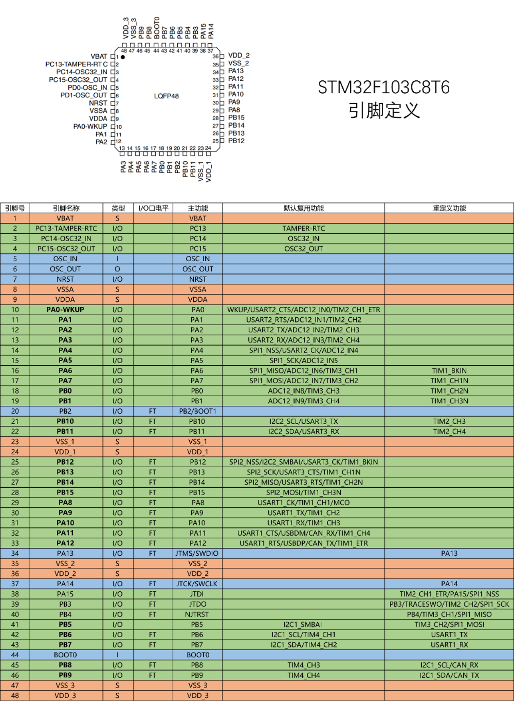

标题
语法：#一级标题 ##二级标题 ###三级标题
快捷键：
Ctrl+数字1~6可以快速将选中的文本调成对应级别的标题
Ctrl+0可以快速将选中的文本调成普通文本
Ctrl+加号/减号对应标题级别进行加减
段落
换行
快捷键：
Enter(回车) 普通换行
Shift+Enter 小换行
Enter(回车) 普通换行 Shift+Enter 小换行
分割线
语法：—或者***+回车
文字显示
字体
语法：
粗体：用一队星号包裹
删除线：用一对双飘号包裹
下划线：用一对u标签包裹
斜体：用一对单星号包裹
高亮：用一对双等号包裹
代码
1 2 3 4 5 6**这是粗体** ~~这是删除线~~ <u>这是下划线</u> *这是斜体* ==这是高亮== <mark>这是高亮</mark>
效果： 这是粗体
这是删除线这是下划线 这是斜体 ==这是高亮==这是高亮
快捷键：
加粗：Ctrl + B 删除线：Shift + Alt +5 下划线： Ctrl + U 斜体： Ctrl + L
上下标
代码:
1 2X^2^ H~2~O
效果：
X^2^ H
2O
列表
无序列表
代码：
*/-/+/ +空格
效果：
1.同一级别：
- 苹果
- 香蕉
- 橘子
2.子集类
- 一级分类
- 二级分类
- 三级分类
可在当前分类中按 ==Tab==键快速分类
快捷键：Crtl + Shift + ]
有序列表
代码：
1数字+.+空格
效果：
- 这是1
- 这是2
- 这是3
快捷键： Crtl + Shift + [
任务列表
代码：
1 2- [ ] 练字 - [x] 学习
效果：
- 练字
- 学习
区块显示
代码：
1> + 回车
效果：
最外层
外层
内层
最内层
代码显示
行内代码
代码：
1`int a = 0;` (是在Esc按键下面的符合)
效果：
int = a;
快捷键：Ctrl + Shift + `
代码块
代码：
1 2 3```js/java/c#/text 内容 ```
快捷键：Ctrl +Shift + K
|
|
链接
代码：
1 2 3www.baidu.com [百度一下](https://www.baidu.com) [百度一下](https://www.baidu "https://www.baidu.com")
效果：
快捷键：Ctrl + K
在文本内跳转
跳转至标题
ps.按住Ctrl键再点击
脚注
对文本进行解释说明
代码：
1 2[^文本] [^文本]:解释说明
效果：
说明1
图片插入
代码：
1
效果：

表格
代码：
1 2 3 4 5| 1 | 2 | 3 | | :--- | :---| :---| | 4 | 5 | 6 | | 7 | 8 | 9 | | 10 | 11 | 12 |
效果：
1 2 3 4 5 6 7 8 9 10 11 12
快捷键： Crtl + T
-
说明的说明 ↩︎